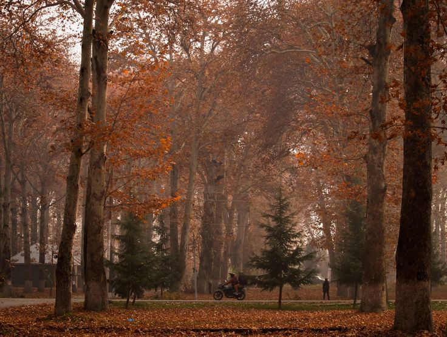

A visual journey
Postcards from Kashmir
Hover over each photograph to read where it was taken. Every image captures a different mood of the Srinagar region.





Hover over each photograph to read where it was taken. Every image captures a different mood of the Srinagar region.

These views are even better in person. Start planning your own Kashmir story today.
Plan Your Trip